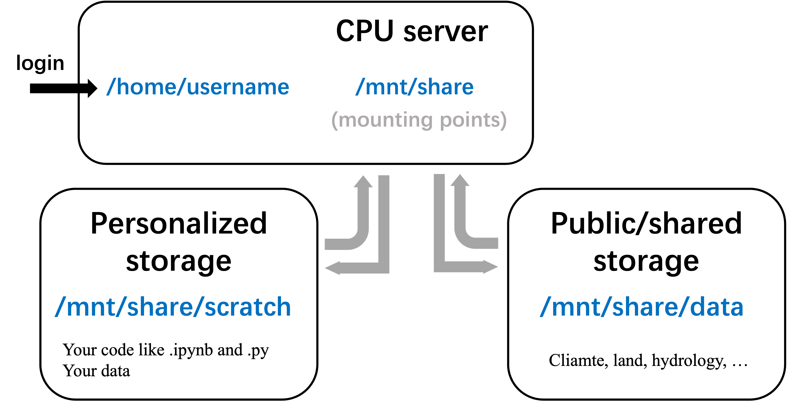

Introduction_of_group-Server&Datasets_2024_FreiburgVersion
1 Login
Why do we need servers?
Stable and long-time running; Powerful computing (more CPUs or GPUs); Large storage with shared datasets; …
What are the tasks?
Run physics-based or machine/deep learning models; Do analysis on observations; Draw scientific figures; …
1 | ssh username@10.8.xx.xx |
This is an linux system with a release version of ubuntu22.04
(you can only log in when you connect to the inner network of the university)
2 Structure
Linux’s directory is like a tree:

There are three folders that should be known:
- Your home directory: /home/username
this is the location when you login in (NOT store data here)
1 | cd, cd ~ |
- Your scratch directory: /mnt/share/scratch
to store personal scripts/data
1 | scratch |
- Our data directory: /mnt/share/data
to store the prepared shared datasets
1 | data |
which look like:

3 Basic Commands on Linux
1 | cd~ or cd, cd /, cd .. |
tip: using tab would be helpful
Be careful of using rm -rf *!!
4 Data Storage Documents
—> going to our google document
- Copyright Notice：All articles in this blog are licensed under BY-NC-SA unless stating additionally.